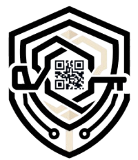

Laboratorium Sekolah
Alat lab hilang…?
Tidak ada catatan siapa yang terakhir memakainya.
TIDAK ADA CATATAN

LabKeeper
Sistem peminjaman alat laboratorium berbasis QR Code
Portal Siswa
Scan QR.
Alat langsung tercatat.
Hitung mundur waktu pengembalian berjalan otomatis, real-time.
MTR-001
Multimeter Digital
AKTIF
Batas kembali
03:00:00
Portal Laboran · Live
Dashboard Monitoring
Total Alat
42
Tersedia
28
Dipinjam
12
Telat
2
LANGKAH 1
Konfirmasi Siswa
✓
→
LANGKAH 2
Verifikasi Admin
✓
Dibangun dengan
Flask 3.0
· Python 3.11
SQLite
· tanpa server DB
QR Code
· scan dari kamera HP
Multi-Sekolah
· data terisolasi 100%
Kode Sumber Terbuka
Open Source
github.com/Hanzyzy/labkeeper-public
SCAN UNTUK BUKA REPO
Pinjam. Pantau.
Kembalikan.